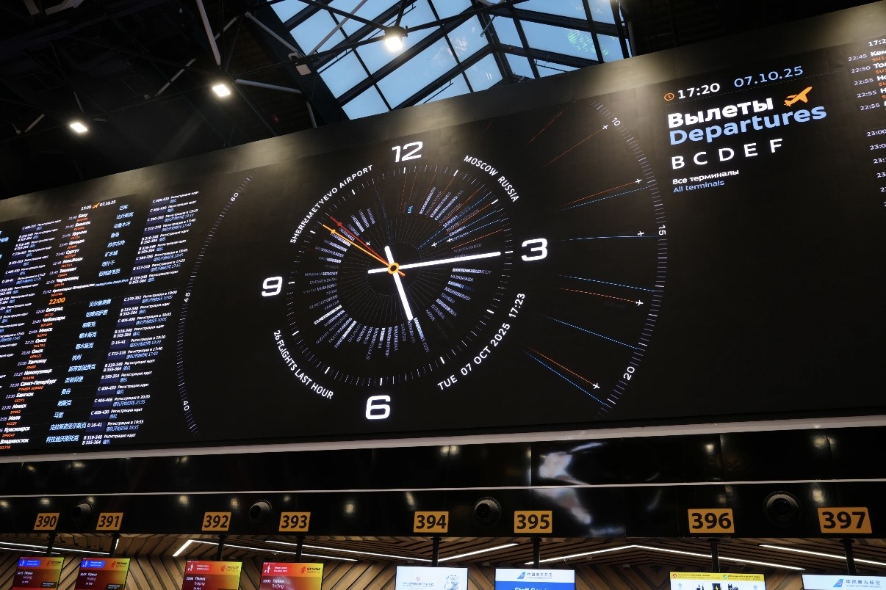

By David
What is an airport LED display tender? An airport LED display tender is the procurement process a terminal operator uses to buy flight information, wayfinding, gate, and advertising screens under published rules and scoring criteria. Uptime and certification dominate the award. This 2026 guide explains how to specify, score, and contract the work.
An airport terminal never closes, so the displays that guide passengers must run continuously under strict reliability and safety rules. An airport LED display tender therefore weighs uptime and certification far more heavily than an ordinary commercial purchase.
Terminals often begin with a technology-led approach and discover later that the operating obligations were underspecified. Building the tender around uptime, redundancy, service access, and certification produces screens that still meet the standard in ten years.
Writing the Airport LED Display Tender Specification
Write the specification as outcomes with tests attached. State the brightness under the measured terminal light conditions, the viewing distance for each screen zone, the uptime target with a measurement method, and the redundancy required for the critical screens.
Group the screens by function rather than buying one specification for the terminal. A flight information board, a wayfinding panel, a gate sign, and an advertising wall each need different performance, and a single requirement either overprices the simple screens or starves the critical ones.
| Terminal Zone | Function | Primary Requirement |
|---|---|---|
| Check-in hall | Flight info and queue status | Brightness and viewing angle |
| Security and corridors | Wayfinding | Reliability and low maintenance |
| Departure gates | Boarding status | Fast update and redundancy |
| Baggage claim | Belt info and advertising | Durability and service access |
| Retail and duty free | Promotion | Color accuracy and fine pitch |
| Exterior facade | Branding | High brightness and sealing |
Attach the test method to every requirement. A requirement without a test is a preference, and a preference cannot be scored or enforced. The test method also tells bidders what evidence to submit, which makes the bids comparable and the award defensible.

Uptime and Redundancy Requirements
Airport screens must be available whenever the terminal is open, so the tender should set an uptime target with a measurement method and require redundancy in both power and signal. A dual power supply with automatic changeover keeps a screen alive when one unit fails.
Define downtime in minutes per year rather than in percentages, because a percentage target is easy to misjudge. For flight information screens, the acceptable downtime should be very small, and the service response should be tied to that figure in the contract.
✅ Uptime target in minutes per year
✅ Measurement method defined
✅ Dual power with automatic changeover
✅ Dual signal paths for critical screens
✅ Service response tied to the target
Certification and Safety Evidence
Airport installations fall under fire, electrical, and electromagnetic rules, and the tender should require the certification evidence before the award. Fire-rated cabinet materials, low smoke emission where the code demands it, and EMC reports showing no interference with navigation systems are all common requirements.
| Evidence | Purpose | Common Failure |
|---|---|---|
| Fire rating | Cabinet material compliance | Material not rated for the void |
| Low smoke emission | Safety in occupied spaces | Evidence not held |
| EMC report | No interference with systems | Report out of date |
| Safety test report | Electrical safety | Report for a different model |
| Technical file | Supporting documentation | Incomplete or undated |
| Reference projects | Past performance | References not contactable |
Verify the certifications before the award rather than after delivery. A material that lacks the required fire rating for a ceiling void forces a redesign at the worst possible moment, and the delay falls on the terminal rather than the supplier.
✅ Fire-rating certificate for the cabinet material
✅ Smoke emission evidence where required
✅ EMC test report for the offered model
✅ Safety test report current and matching
✅ Technical file with drawings
Evaluation Criteria and Scoring
Publish the criteria and weightings before the bids arrive, and score every offer against the same questions. Uptime capability, certification, and service response should carry more weight than in a commercial purchase, because the operating consequences are far greater.
| Criterion | What It Measures | Typical Weight |
|---|---|---|
| Technical compliance | Meets every stated requirement | 20 to 30 percent |
| Uptime and redundancy | Reliability and failover design | 15 to 25 percent |
| Certification evidence | Fire, safety, and EMC compliance | 10 to 20 percent |
| Price and whole-life cost | Cost across the terminal life | 20 to 30 percent |
| Service and spares | Response across the terminal day | 10 to 20 percent |
| Installation approach | Access and phasing plan | 5 to 15 percent |
Score technical compliance as pass or fail on the mandatory requirements, then score the remaining criteria on a defined scale. A bid that fails a mandatory requirement is rejected regardless of price, which prevents a cheap non-compliant offer from entering the final comparison.
Service Access in a Live Terminal
Service access is the constraint most often underestimated. A screen mounted in a ceiling void or behind a finished wall may be impossible to service without scaffolding and a corridor closure, and those closures need approval weeks in advance.
Require front-serviceable cabinets, which allow module replacement from the face of the screen, and ask bidders to set out their access plan. A failed module that can be reached only through a restricted area turns an hour of work into days of coordination.
✅ Front-serviceable cabinet design
✅ Access plan stated in the bid
✅ No corridor closure for routine service
✅ Spares held at or near the terminal
✅ Out-of-hours working arrangements

Content Systems and Integration
Airport signage is the visible end of an information system, and the LED network must integrate with flight data, gate changes, and announcements through a documented interface. Require the bidder to demonstrate the integration rather than promise it.
Test the update latency during commissioning and record it, so a later performance complaint can be measured against an agreed baseline. Gate changes happen minutes before departure, and a screen that updates slowly is a passenger-experience failure.
Contract Terms and Acceptance
Set the acceptance test as a contract condition. The terminal should not pay the final sum until the screens pass the same tests the tender required, which ties the award to the outcome the specification described rather than to a promise made during bidding.
Document the test results with measurements, photographs, and integration logs, and keep them with the contract. The same evidence supports a warranty claim later and gives the terminal a baseline for judging performance across the years.

Common Failures in Airport Tenders
- Specifying brightness without measuring terminal light
- Setting an uptime target with no measurement method
- Omitting redundancy from the critical screens
- Requesting certifications only after the award
- Ignoring the service access route until installation
- Awarding without an acceptance test in the contract
Each failure costs the terminal either operational disruption or rework. An airport LED display tender that captures uptime, certification, access, and integration produces screens that still meet the standard long after the contract is signed.
Evaluating an Airport LED Display Tender
Score the airport LED display tender against the published criteria using more than one reviewer, and record the reasoning behind every score. Differences between reviewers reveal where the evidence is thin or where a claim was read generously.
Document the award decision and keep the record with the contract. An airport LED display tender that records its criteria, scores, and reasoning survives a challenge, while one that relies on the recollection of the panel does not.
A terminal that documents the tender criteria will find the next procurement faster, because the reasoning behind the specification is available to reuse rather than reconstruct.
The terminal benefits twice from a well-documented tender, once at the award and again at every subsequent service visit, when the evidence file answers questions that memory cannot.
A terminal that reviews its screens against the original specification each year catches degradation early, while the warranty still covers the difference.
Tendering for a US Airport Project
US airport projects are usually publicly funded and therefore follow a formal procurement route, which changes what the display supplier has to provide and when.
Three requirements appear repeatedly. The certification file at submittal, because fire and electrical requirements are conditions of installation rather than preferences. Evidence of a manufacturing origin where the funding carries a trade agreement condition, checked at evaluation rather than after award. And documented uptime and response commitments, because airport procurement treats a dark flight information board as an operational incident.
Two points for a bidder. Confirm the airport of entry and the inland route before quoting delivery, since the site may be some distance from the port. And state service access explicitly — front-serviceable cabinets remove the corridor closures that otherwise dominate the maintenance cost on a live terminal.
FAQ
Sources and Further Reading
Related Articles
For this requirement our range covers it directly: the X Series (front/rear service, common parts across platforms) and the series overview for spare-part lists.
Support Your Airport Tender
Send us your terminal requirements, and we will supply the certification and technical evidence your tender needs.
Request Terminal Tender PackChat on WhatsApp